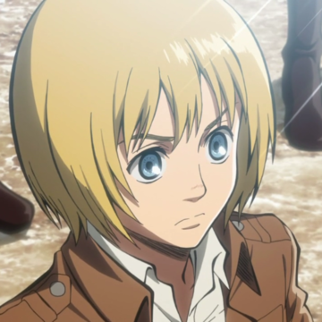

중요인물
*이미지를 클릭하시면 관련동영상을 볼수있습니다*

아르민 알레르토
아르민 알레르토는 진격의 거인 시리즈의 주인공 중 한 명으로, 조용하고 내성적인 성격을 가지고 있디. 하지만 전략적인 능력과 분석력이 뛰어나며, 중요한 결정을 내릴 때는 용기와 행동력을 보이며 아르민은 인류의 적인 거인들과 싸우는 것을 목표로 하는 조사 병사단의 일원이다.

리바이 아커만
리바이 아커만은 진격의 거인 시리즈의 인물 중 한명이다. 그는 인간들을 지키기 위해 싸우는 최정예 부대의 일원이며, 에렌과 미카사의 동료이다. 그는 매우 뛰어난 전투 기술과 지도력으로 유명하며, 그의 강한 개성과 카리스마로 인해 많은 팬들에게 사랑받고 있다.